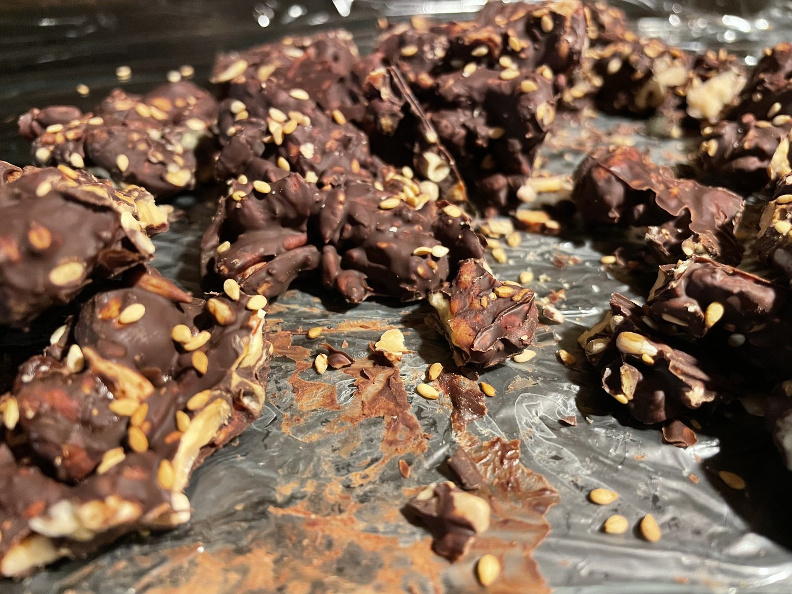

Semillas y frutos secos tostados con cobertura de chocolate
Ingredientes
×
- 150 g de frutos secos
- 3 cdas de semillas
- 150 g de chocolate negro

Preparación
Paso 1
Tostar en una sartén 150 g de frutos secos (almendras, avellanas, nueces) y 3 cdas de semillas (sésamo, girasol).
Paso 2
Fundir 150 g de chocolate negro al baño maría y mezclar con los frutos secos y las semillas.
Paso 3
Repartir montoncitos sobre papel de horno o film, espolvorear con unas semillas más y dejar enfriar hasta que el chocolate se endurezca.
Resumen
150 g de frutos secos
3 cdas de semillas
Tostar
150 g de chocolate negro
Fundir mezclar
Repartir espolvorear dejar enfriar